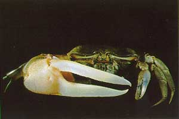

Fiddler Crabs
Uca hirsutimanus
Hairy-handed Fiddler Crab
Type
Information
Photos
Video
Art
References
Species List
Type Description
Uca hirsutimanus
George, R.W., and D.S. Jones (1982) A revision of the fiddler crabs of Australia (Ocypodinae
: Uca
).
Record of the Western Australian Museum Supplement
14:1–99.
Information
Subgenus
Australuca
Common Names
Hairy-handed Fiddler Crab
Synonyms, Alternate Spellings, & Name Forms
Uca (Australuca) hirsutimanus
,
Uca hirsutimanus
Geographic Range
Indo-West Pacific: Australia (North coast)
Download SVG line map of ranges.
Map data derived from:
George & Jones (1982)
;
von Hagen & Jones (1989)
External Links
Encyclopedia of Life
Wikipedia
iNaturalist
GBIF
Photos

Video
No videos available at this time.
Art
No art available at this time.
References
Beinlich, B., and H.-O. von Hagen (2006) Materials for a more stable subdivision of the genus
Uca
Leach.
Zoologische Mededelingen
80(4):9–32.
George, R.W., and D.S. Jones (1982) A revision of the fiddler crabs of Australia (Ocypodinae
: Uca
).
Record of the Western Australian Museum Supplement
14:1–99.
{kind=link}